I examine twelve representative soccer states. Each is identified by its state, five numbers (x0, y0, x1, y1, b): player 0's cell (x0, y0), player 1's cell (x1, y1), and b (which player currently has the ball, 0 or 1). That five-number state is not part of the Q matrix — it just names which stage game is shown; the Q matrix itself is the 4×4 table of payoffs indexed by the two players' actions (U D L R each), not by coordinates.
For each state, the left panel shows the physical player configuration and every action either player actually takes in equilibrium, drawn as probability arrows (thick = likely, thin = unlikely, no arrow at all = zero probability). The right panel shows the complete 4×4 stage-game Q matrix — the payoff table Q(s, a0, a1) at that one state, not the value function V(s) — redrawn as a node-and-arrow graph. Always the full grid, never reduced. The goal is not simply to show where mixing happens on the board, but what the players are actually doing when it does.
A player's support is the set of actions it assigns positive probability in an equilibrium strategy — support (2,2) means the carrier mixes over 2 actions and the defender mixes over 2 actions.
| Carrier support | Defender support | Shape | States |
|---|---|---|---|
| 2 actions | 2 actions | (2,2) | 68 |
| 3 actions | 3 actions | (3,3) | 4 |
| 2 actions | 1 action | (2,1) | 14 |
| 3 actions | 2 actions | (3,2) | 8 |
| total no-pure-saddle states | 94 | ||
The defender's support is never larger than the carrier's, in any of the 94 no-pure-saddle states on the canonical board.
The bigger finding underneath those four rows: 94 no-pure-saddle states are not 94 different phenomena — they are four repeated shapes, recurring all over the board.
A reported fractional split is not always a number the game forces. Every case below is labelled with exactly one of these (docs/degeneracy.md has the full breakdown, all 94 states):
| type | meaning | count |
|---|---|---|
| Forced mixed equilibrium | neither side has an unweighted action tied with its reported support's value — the split shown is the whole indifference class, no freedom left over. | 64 |
| Degenerate equilibrium face | a side's reported support already has two or more actions, and a further, unweighted action ties them exactly — one vertex of a larger polytope, not a uniquely forced ratio. | 16 |
| Pure-tied / fractional LP output | a side's reported support is a single action (nominally “pure”), but an unweighted action ties it exactly — just as arbitrary as a printed fractional split. | 14 |
Case 7 shows one of the 64 repeats directly (Case 2's exact shape, elsewhere on the board, mirrored). This page shows one example of each of the four canonical support shapes, plus every distinct mechanism studied in the project that can force a mix: a stochastic move order, this project's own tackle rule, a dense reward with zero transition noise, and movement slip on a goal shape that is otherwise always pure. Every one of the twelve gets its own full-size board-and-matrix figure below — no combined overview image, so nothing here is ever cropped by a page break.
The board (left). Each player is a filled circle; the ball sits on whoever carries it. An arrow points from a player toward a cell it might move to, and its thickness and opacity are the equilibrium probability of that action — a bold arrow is very likely, a thin one is unlikely, and an action with (numerically) zero probability draws no arrow at all. A pure policy is one bold arrow and nothing else; a mixed policy fans out into two or three arrows of different weights.
The Q matrix (right). Each node is one cell of the complete 4×4 stage matrix (row = the carrier's action, col = the defender's action, always reoriented so the printed payoff is the carrier's, regardless of which player id actually carries the ball). A blue arrow points from a cell to the cell in the same column with the higher payoff — the carrier's own reason to switch rows. A green arrow points from a cell to the cell in the same row with the lower payoff — the defender's reason to switch columns, since the defender minimises. Every case shows all 16 cells, so the shapes are directly comparable. This is the mathematical justification for what the board already shows: it is why the players' support is exactly what it is.
A pure state has exactly one node with no outgoing arrow — that cell is the saddle, everything else eventually points to it. A mixed state has arrows everywhere: every node points somewhere, so they chase each other around a closed best-response cycle — no pure action pair is stable, which is exactly why the board shows more than one arrow.
A third piece, below the board and the Q matrix: the successor-state coordinates. Every case also gets a 4×4 table, same orientation as the Q matrix, whose cells are the actual (x0, y0, x1, y1, b) state reached by each joint action — what game.transitions() returns, not what the payoff is. Where the transition is stochastic (random move order, or the tackle rule), a cell lists both possible successors and their probabilities. This is the direct answer to “where do the numbers in the Q matrix actually come from”: each payoff is the expected value over exactly these successor states.
For a focused read: the typical two-action mix, the cleanest indifference example, a genuine three-action mix, the sharpest LP-degeneracy example, and a case where a completely different mechanism (the reward, not the transition) forces the mix. All twelve cases, these five included, follow in full below in numbered order.
The primary example — the typical mix. Gap 0.0136. The carrier mixes U 63.5% / D 36.5%; the defender answers U 36.5% / R 63.5%. This is not one strange state among many — it is the dominant pattern in the entire mixed-state set: 90 of the 94 no-pure-saddle states on the canonical board cross a vertical pair exactly like this one, the carrier deciding which goal row to attack and the defender guessing which one. Everything that follows is either this same shape recurring (Case 7), or a genuinely different shape worth contrasting against it (Cases 3, 4, 5, 9, 10).
Type: forced mixed equilibrium — the reported 63.5%/36.5% split is the whole indifference class, not one point on a larger face.
Support: carrier {U, D} (63.5% / 36.5%) · defender {U, R} (36.5% / 63.5%)
Why indifferent: Carrier E[U]=E[D]=+0.094, strictly above E[L]=+0.091 and E[R]=−0.015. Defender E[U]=E[R]=+0.094, strictly below E[L]=+0.212 and E[D]=+0.332.
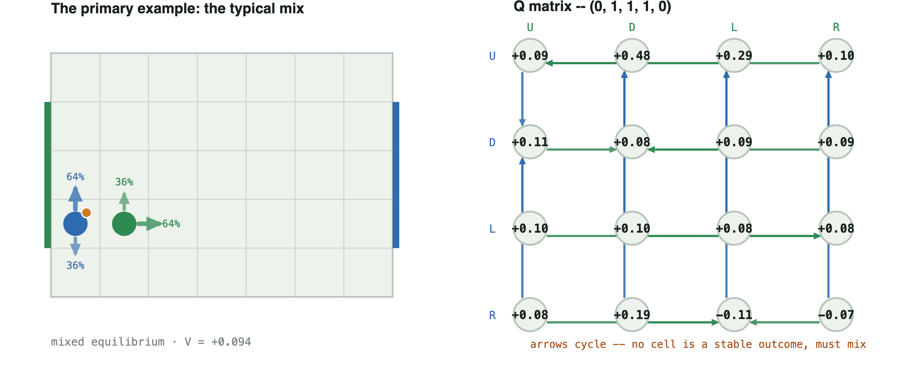
U D L R U 0.086 0.478 0.286 0.099 D 0.109 0.076 0.085 0.086 L 0.103 0.103 0.085 0.084 R 0.082 0.187 -0.108 -0.071
Successor states, by joint action — same orientation as the Q matrix above (carrier row, defender column), each cell the resulting (x0, y0, x1, y1, b). Two lines in a cell means the outcome depends on who moves first (each 50%).
| carrier \ defender | U | D | L | R |
|---|---|---|---|---|
| U | (0,2,1,2,0) | (0,2,1,0,0) | 50%: (0,2,0,1,0) 50%: (0,2,1,1,0) | (0,2,2,1,0) |
| D | (0,0,1,2,0) | (0,0,1,0,0) | 50%: (0,0,0,1,0) 50%: (0,0,1,1,0) | (0,0,2,1,0) |
| L | (0,1,1,2,0) | (0,1,1,0,0) | (0,1,1,1,0) | (0,1,2,1,0) |
| R | 50%: (0,1,1,2,1) 50%: (1,1,1,2,0) | 50%: (0,1,1,0,1) 50%: (1,1,1,0,0) | 50%: (0,1,1,1,0) 50%: (0,1,1,1,1) | 50%: (0,1,2,1,1) 50%: (1,1,2,1,0) |
A clean L/R indifference example. Placed directly after the primary example on purpose: this is the cleanest demonstration of the intuition Case 2 only implies —
"when we move right and when we move left, there's an equal chance of me winning. That's why I am indifferent between the two."
Gap 0.0445. The carrier's entire live option set is exactly {L, R} — no vertical option survives at all, which is what makes this state (rather than Case 4, which crosses U/L) the cleanest match to that description: two actions genuinely equally good against the defender's own mix. This is the rarer shape overall: only 4 of 94 no-pure-saddle states cross a purely horizontal pair instead of a vertical one.
Type: forced mixed equilibrium — both sides' splits are the whole indifference class.
Support: carrier {L, R} (7.7% / 92.3%) · defender {D, L} (18% / 82%)
Why indifferent: Carrier E[L]=E[R]=+0.206, strictly above E[D]=+0.162 and E[U]=+0.050. Defender E[D]=E[L]=+0.206, strictly below E[R]=+0.216 and E[U]=+0.257.
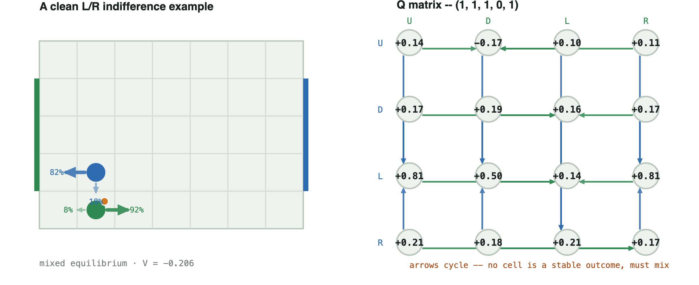
U D L R U 0.139 -0.173 0.099 0.110 D 0.171 0.185 0.157 0.171 L 0.810 0.500 0.141 0.810 R 0.211 0.181 0.211 0.167
Successor states, by joint action — same orientation as the Q matrix above (carrier row, defender column), each cell the resulting (x0, y0, x1, y1, b). Two lines in a cell means the outcome depends on who moves first (each 50%).
| carrier \ defender | U | D | L | R |
|---|---|---|---|---|
| U | 50%: (1,2,1,1,1) 50%: (1,2,1,0,0) | 50%: (1,1,1,0,0) 50%: (1,1,1,0,1) | 50%: (0,1,1,1,1) 50%: (0,1,1,0,0) | 50%: (2,1,1,1,1) 50%: (2,1,1,0,0) |
| D | (1,2,1,0,1) | (1,1,1,0,1) | (0,1,1,0,1) | (2,1,1,0,1) |
| L | (1,2,0,0,1) | 50%: (1,1,0,0,1) 50%: (1,0,0,0,1) | (0,1,0,0,1) | (2,1,0,0,1) |
| R | (1,2,2,0,1) | 50%: (1,1,2,0,1) 50%: (1,0,2,0,1) | (0,1,2,0,1) | (2,1,2,0,1) |
A genuine 3-action mix. Six cells from goal, as far as this board allows, with the defender close enough to threaten three different rows at once: no single row is safely better than the other two, so three actions are simultaneously undominated on both sides. This is one of only 4 states on the whole canonical board with support shape (3,3) — mixing is not always a 50/50 split between two actions. (Entropy 1.109 bits, the richest mix on this page, if a single summary number is wanted — but the three-way split itself is the point.)
Type: degenerate equilibrium face (carrier) — a fourth, unweighted carrier action ties the reported three-way split exactly (see “why indifferent”), so the printed split is one point on a larger face, not a forced ratio. The defender's own split is a genuine forced mix.
Support: carrier {U, L, R} (43.3% / 54.7% / 1.9%) · defender {U, D, L} (91.9% / 5.9% / 2.3%)
Why indifferent: Carrier E[U]=E[L]=E[R]=+0.0848 (the three actions weighted) — and E[D]=+0.0848 too: all four actions tie exactly, so the 43.3%/0%/54.7%/1.9% split printed is one point on a whole face of equally-good carrier mixes, not a uniquely forced ratio. Defender E[U]=E[D]=E[L]=+0.0848, below E[R]=+0.097.
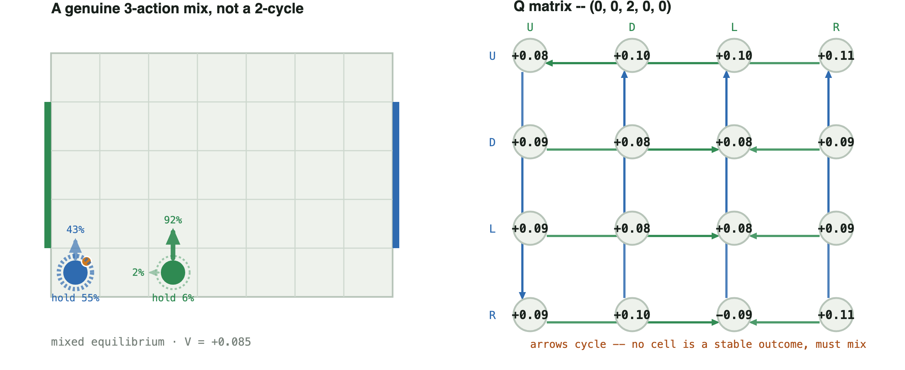
U D L R U 0.084 0.095 0.103 0.110 D 0.086 0.076 0.076 0.086 L 0.086 0.076 0.076 0.086 R 0.088 0.095 -0.088 0.110
Successor states, by joint action — same orientation as the Q matrix above (carrier row, defender column), each cell the resulting (x0, y0, x1, y1, b). Two lines in a cell means the outcome depends on who moves first (each 50%).
| carrier \ defender | U | D | L | R |
|---|---|---|---|---|
| U | (0,1,2,1,0) | (0,1,2,0,0) | (0,1,1,0,0) | (0,1,3,0,0) |
| D | (0,0,2,1,0) | (0,0,2,0,0) | (0,0,1,0,0) | (0,0,3,0,0) |
| L | (0,0,2,1,0) | (0,0,2,0,0) | (0,0,1,0,0) | (0,0,3,0,0) |
| R | (1,0,2,1,0) | (1,0,2,0,0) | 50%: (1,0,2,0,0) 50%: (0,0,1,0,1) | (1,0,3,0,0) |
The asymmetric mix — the sharpest LP-degeneracy example. Support (2, 1) — gap 0.0095. The odd one out: the carrier's equilibrium still mixes two actions (U 2.6% / D 97.4%), but the defender's equilibrium is a single fixed move (R, 100%). Every other case on this page is a symmetric duel — both players genuinely guessing. Here only one side is.
Type: pure-tied / fractional LP output (defender) — the defender's official policy is printed pure R (100%), but D ties it exactly: the choice of R over D is exactly as arbitrary as a printed fractional split. The sharpest example on this page that a fractional LP output is not automatically a strategically required mixed strategy.
Support: carrier {U, D} (2.6% / 97.4%) · defender {R} (100%)
Why indifferent: Carrier E[U]=E[D]=+0.095, above E[L]=+0.093 and E[R]=−0.072 (worked out fully below). The defender's official policy is pure R (100%), but E[R]=+0.095 and E[D]=+0.095 tie too: the defender's own choice of R over D is exactly as arbitrary as the carrier's U/D split, it just isn't printed as a percentage because the solver put all the weight on one side.
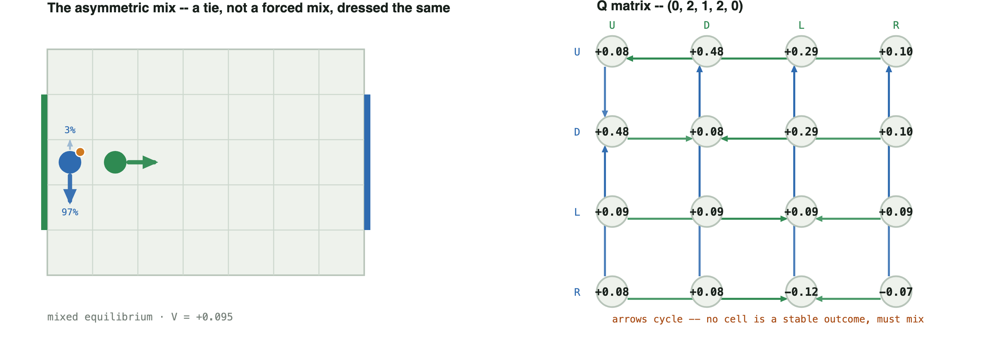
U D L R U 0.085 0.478 0.291 0.095 D 0.478 0.085 0.291 0.095 L 0.093 0.093 0.086 0.093 R 0.082 0.082 -0.122 -0.072
Successor states, by joint action — same orientation as the Q matrix above (carrier row, defender column), each cell the resulting (x0, y0, x1, y1, b). Two lines in a cell means the outcome depends on who moves first (each 50%).
| carrier \ defender | U | D | L | R |
|---|---|---|---|---|
| U | (0,3,1,3,0) | (0,3,1,1,0) | 50%: (0,3,0,2,0) 50%: (0,3,1,2,0) | (0,3,2,2,0) |
| D | (0,1,1,3,0) | (0,1,1,1,0) | 50%: (0,1,0,2,0) 50%: (0,1,1,2,0) | (0,1,2,2,0) |
| L | (0,2,1,3,0) | (0,2,1,1,0) | (0,2,1,2,0) | (0,2,2,2,0) |
| R | 50%: (0,2,1,3,1) 50%: (1,2,1,3,0) | 50%: (0,2,1,1,1) 50%: (1,2,1,1,0) | 50%: (0,2,1,2,0) 50%: (0,2,1,2,1) | 50%: (0,2,2,2,1) 50%: (1,2,2,2,0) |
Why the carrier still needs two actions against a defender who never varies: against the defender's pure R, column R reads U 0.095, D 0.095, L 0.093, R -0.072 — U and D are exactly tied, both strictly better than L or R. Nothing in the payoffs favours one over the other, so any split of U/D is an equally valid best reply; the solver's LP reports one particular split (2.6% / 97.4%), not a probability forced by the game the way Case 3's 7.7% / 92.3% is. This is the sharpest example on this page of a general fact worth stating plainly: a fractional LP output is not automatically a strategically required mixed strategy. A tie between two rows can look identical, in the printed policy, to a genuine forced mix, but it is a different phenomenon — no best-reply cycle is involved, and either pure U or pure D alone would also be a valid equilibrium reply to the defender's fixed R.
Mixing forced by reward alone, not transition. An advanced case, illustrating a fundamentally different mechanism from the four above. Every case so far gets its coin flip from a stochastic transition — the random move order. This one has no transition stochasticity at all: the mix comes entirely from scoring="territory", a dense per-step reward for the ball in the opponent's final third, layered on top of the ordinary win/loss score. Gap 0.0653 — close to a fair coin (entropy 0.996 bits), forced purely by coupling the reward to both players' actions. Mixing does not require stochastic transitions; it can come from the payoff structure alone.
Type: forced mixed equilibrium — reward-coupling forces a genuine indifference on both sides, the same as a transition-coupled matching-pennies core.
Support: carrier {D, R} (53.8% / 46.2%) · defender {U, L} (95.1% / 4.9%)
Why indifferent: Carrier E[D]=E[R]=+0.129, above E[U]=+0.119 and E[L]=+0.090. Defender E[U]=E[L]=+0.129, below E[D]=+0.455 and E[R]=+0.473.
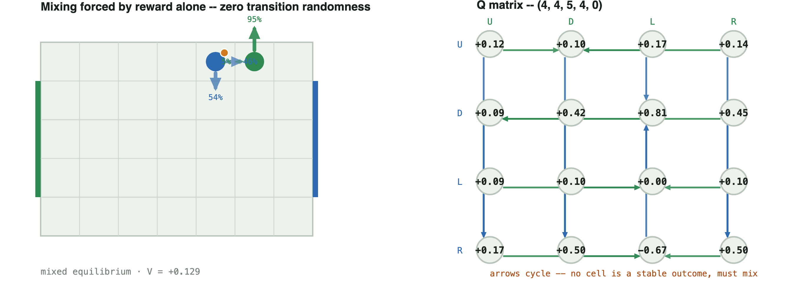
U D L R U 0.116 0.105 0.170 0.136 D 0.094 0.415 0.815 0.450 L 0.094 0.105 0.000 0.105 R 0.170 0.500 -0.671 0.500
Successor states, by joint action — same orientation as the Q matrix above (carrier row, defender column), each cell the resulting (x0, y0, x1, y1, b). Two lines in a cell means the outcome depends on who moves first (each 50%).
| carrier \ defender | U | D | L | R |
|---|---|---|---|---|
| U | (4,4,5,4,0) | (4,4,5,3,0) | (4,4,5,4,1) | (4,4,6,4,0) |
| D | (4,3,5,4,0) | (4,3,5,3,0) | (4,3,4,4,0) | (4,3,6,4,0) |
| L | (3,4,5,4,0) | (3,4,5,3,0) | (3,4,4,4,0) | (3,4,6,4,0) |
| R | (4,4,5,4,1) | (5,4,5,3,0) | (5,4,4,4,1) | (5,4,6,4,0) |
Everything above stays inside one stage game — what the carrier and defender do at a state. tournament_deepdive.md shows the whole-game consequence — greedy collapses against a challenger, minimax doesn't — but at the level of the tournament, not any one of these states. This table connects the two directly: at each state, force the carrier to its single most likely ("greedy") action and let the defender best-respond within that one stage game, then compare to the actual Nash mixed value. Three rows (Cases 4, 6, 10) are detailed further down in the complete set below; the other four are the lead cases above.
| case | greedy pure value vs. BR | Nash mixed value vs. BR | value of mixing |
|---|---|---|---|
| Case 2 — the primary example | +0.0856 | +0.0942 | +0.0086 |
| Case 3 — L/R indifference | +0.1665 | +0.2056 | +0.0391 |
| Case 4 — the corner duel | +0.0763 | +0.0776 | +0.0012 |
| Case 5 — 3-action mix | +0.0763 | +0.0848 | +0.0085 |
| Case 6 — near-pure hedge | +0.1665 | +0.1676 | +0.0011 |
| Case 9 — the asymmetric mix | +0.0848 | +0.0951 | +0.0103 |
| Case 10 — the three-lane mix | +0.2471 | +0.2816 | +0.0345 |
The value of mixing is never negative — exactly the theoretical guarantee (an equilibrium mix is a best response to the opponent's best response; nothing pure can beat that). It is also not uniform: Case 3's clean L/R indifference is worth +0.039, fifteen times more than Case 6's near-pure hedge (+0.0011, unsurprising — a 97.5/2.5 hedge is almost what the greedy action already does) or Case 4's corner duel (+0.0012, the corner leaves little room to exploit either way). Case 3 and Case 10 -- the deepest gap of any case in this doc — are also the two largest values of mixing here: the states where the matrix punishes commitment hardest are the same ones where committing costs the most.
The five above are the ones to read first. What follows is the complete set, Case 1 through Case 12 in order — the same five again, in their numbered place, plus the seven not covered above: a pure state for contrast, the fourth and last canonical support shape, a hedge so shallow that rounding it would misread the game, this project's own tackle rule producing the same duel by a different mechanism, the exact mirror of Case 2, a case worth discussing on its own (Case 9's twin structural finding, the three-lane mix), and a single-cell goal forced to mix anyway once movement noise is added — each with its board, its node-and-arrow graph, its exact 4×4 Q matrix, and its type label.
A pure state, for contrast. Saddle at U/U. The carrier plays U always; the defender answers U always; neither has any reason to deviate.
Type: pure equilibrium — not one of the 94 no-pure-saddle states; shown for contrast with everything else on this page.
Support: carrier {U} (100%) · defender {U} (100%)
Why indifferent: Carrier: U=+0.234 beats next-best L=+0.161 by 0.073; defender: U=+0.234 beats next-best R=+0.271 by 0.038. No tie on either side — that gap, not a coin flip, is what makes this state pure.
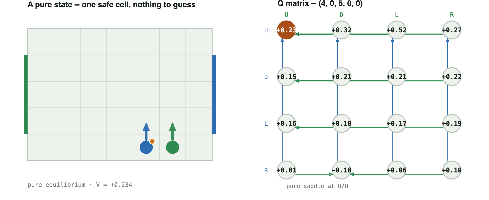
U D L R U 0.234 0.317 0.523 0.272 D 0.151 0.211 0.211 0.222 L 0.161 0.182 0.172 0.190 R 0.012 -0.095 0.058 0.098
Successor states, by joint action — same orientation as the Q matrix above (carrier row, defender column), each cell the resulting (x0, y0, x1, y1, b). Two lines in a cell means the outcome depends on who moves first (each 50%).
| carrier \ defender | U | D | L | R |
|---|---|---|---|---|
| U | (4,1,5,1,0) | (4,1,5,0,0) | 50%: (4,1,4,0,0) 50%: (4,1,5,0,0) | (4,1,6,0,0) |
| D | (4,0,5,1,0) | (4,0,5,0,0) | (4,0,5,0,0) | (4,0,6,0,0) |
| L | (3,0,5,1,0) | (3,0,5,0,0) | 50%: (3,0,4,0,0) 50%: (3,0,5,0,0) | (3,0,6,0,0) |
| R | 50%: (4,0,5,1,1) 50%: (5,0,5,1,0) | (4,0,5,0,1) | 50%: (4,0,5,0,0) 50%: (4,0,5,0,1) | 50%: (4,0,6,0,1) 50%: (5,0,6,0,0) |
The primary example — the typical mix. Gap 0.0136. The carrier mixes U 63.5% / D 36.5%; the defender answers U 36.5% / R 63.5%. This is not one strange state among many — it is the dominant pattern in the entire mixed-state set: 90 of the 94 no-pure-saddle states on the canonical board cross a vertical pair exactly like this one, the carrier deciding which goal row to attack and the defender guessing which one. Everything that follows is either this same shape recurring (Case 7), or a genuinely different shape worth contrasting against it (Cases 3, 4, 5, 9, 10).
Type: forced mixed equilibrium — the reported 63.5%/36.5% split is the whole indifference class, not one point on a larger face.
Support: carrier {U, D} (63.5% / 36.5%) · defender {U, R} (36.5% / 63.5%)
Why indifferent: Carrier E[U]=E[D]=+0.094, strictly above E[L]=+0.091 and E[R]=−0.015. Defender E[U]=E[R]=+0.094, strictly below E[L]=+0.212 and E[D]=+0.332.
U D L R U 0.086 0.478 0.286 0.099 D 0.109 0.076 0.085 0.086 L 0.103 0.103 0.085 0.084 R 0.082 0.187 -0.108 -0.071
Successor states, by joint action — same orientation as the Q matrix above (carrier row, defender column), each cell the resulting (x0, y0, x1, y1, b). Two lines in a cell means the outcome depends on who moves first (each 50%).
| carrier \ defender | U | D | L | R |
|---|---|---|---|---|
| U | (0,2,1,2,0) | (0,2,1,0,0) | 50%: (0,2,0,1,0) 50%: (0,2,1,1,0) | (0,2,2,1,0) |
| D | (0,0,1,2,0) | (0,0,1,0,0) | 50%: (0,0,0,1,0) 50%: (0,0,1,1,0) | (0,0,2,1,0) |
| L | (0,1,1,2,0) | (0,1,1,0,0) | (0,1,1,1,0) | (0,1,2,1,0) |
| R | 50%: (0,1,1,2,1) 50%: (1,1,1,2,0) | 50%: (0,1,1,0,1) 50%: (1,1,1,0,0) | 50%: (0,1,1,1,0) 50%: (0,1,1,1,1) | 50%: (0,1,2,1,1) 50%: (1,1,2,1,0) |
A clean L/R indifference example. Placed directly after the primary example on purpose: this is the cleanest demonstration of the intuition Case 2 only implies —
"when we move right and when we move left, there's an equal chance of me winning. That's why I am indifferent between the two."
Gap 0.0445. The carrier's entire live option set is exactly {L, R} — no vertical option survives at all, which is what makes this state (rather than Case 4, which crosses U/L) the cleanest match to that description: two actions genuinely equally good against the defender's own mix. This is the rarer shape overall: only 4 of 94 no-pure-saddle states cross a purely horizontal pair instead of a vertical one.
Type: forced mixed equilibrium — both sides' splits are the whole indifference class.
Support: carrier {L, R} (7.7% / 92.3%) · defender {D, L} (18% / 82%)
Why indifferent: Carrier E[L]=E[R]=+0.206, strictly above E[D]=+0.162 and E[U]=+0.050. Defender E[D]=E[L]=+0.206, strictly below E[R]=+0.216 and E[U]=+0.257.
U D L R U 0.139 -0.173 0.099 0.110 D 0.171 0.185 0.157 0.171 L 0.810 0.500 0.141 0.810 R 0.211 0.181 0.211 0.167
Successor states, by joint action — same orientation as the Q matrix above (carrier row, defender column), each cell the resulting (x0, y0, x1, y1, b). Two lines in a cell means the outcome depends on who moves first (each 50%).
| carrier \ defender | U | D | L | R |
|---|---|---|---|---|
| U | 50%: (1,2,1,1,1) 50%: (1,2,1,0,0) | 50%: (1,1,1,0,0) 50%: (1,1,1,0,1) | 50%: (0,1,1,1,1) 50%: (0,1,1,0,0) | 50%: (2,1,1,1,1) 50%: (2,1,1,0,0) |
| D | (1,2,1,0,1) | (1,1,1,0,1) | (0,1,1,0,1) | (2,1,1,0,1) |
| L | (1,2,0,0,1) | 50%: (1,1,0,0,1) 50%: (1,0,0,0,1) | (0,1,0,0,1) | (2,1,0,0,1) |
| R | (1,2,2,0,1) | 50%: (1,1,2,0,1) 50%: (1,0,2,0,1) | (0,1,2,0,1) | (2,1,2,0,1) |
The corner duel. The board position sketched at the meeting: the carrier at (0, 0) — the back corner, right against its own goal — and the defender diagonally adjacent at (1, 1). This is the closest match, coordinate for coordinate, to that sketch. Distinct from both cases before it — Case 2 crosses U/D, Case 3 a clean L/R — this one crosses U/L for the carrier and D/L for the defender: pinned in the corner, the carrier's two live escapes are straight up the sideline (U) or across along the back line (L), and the defender is guessing which. Gap 0.0121; the mix is lopsided but genuine — the corner leaves little room, but not zero.
Type: degenerate equilibrium face (carrier) — D ties the reported U/L split exactly (see “why indifferent”), so any mix of U/D/L in the right proportion is an equally valid equilibrium, not just the split shown.
Support: carrier {U, L} (4.6% / 95.4%) · defender {D, L} (94.9% / 5.1%)
Why indifferent: Carrier E[U]=E[L]=+0.078, above E[R]=−0.066 — but E[D]=+0.078 too, an exact tie the solver simply didn't weight: any mix of U/D/L in the right proportion is an equally valid equilibrium, not just the 4.6%/95.4% split shown. Defender E[D]=E[L]=+0.078, below E[R]=+0.086 and E[U]=+0.109.
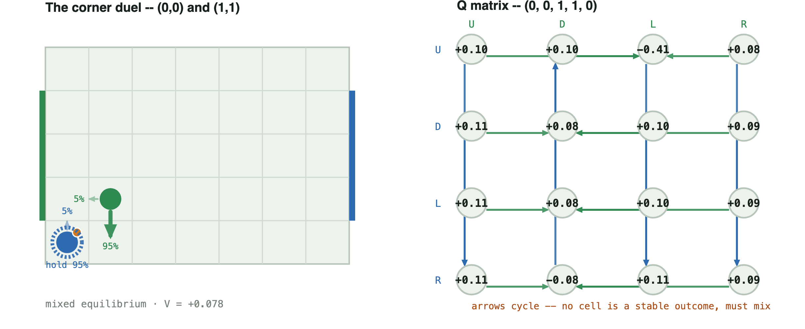
U D L R U 0.103 0.103 -0.408 0.084 D 0.109 0.076 0.101 0.086 L 0.109 0.076 0.101 0.086 R 0.112 -0.075 0.112 0.088
Successor states, by joint action — same orientation as the Q matrix above (carrier row, defender column), each cell the resulting (x0, y0, x1, y1, b). Two lines in a cell means the outcome depends on who moves first (each 50%).
| carrier \ defender | U | D | L | R |
|---|---|---|---|---|
| U | (0,1,1,2,0) | (0,1,1,0,0) | 50%: (0,1,1,1,0) 50%: (0,0,0,1,1) | (0,1,2,1,0) |
| D | (0,0,1,2,0) | (0,0,1,0,0) | (0,0,0,1,0) | (0,0,2,1,0) |
| L | (0,0,1,2,0) | (0,0,1,0,0) | (0,0,0,1,0) | (0,0,2,1,0) |
| R | (1,0,1,2,0) | 50%: (1,0,1,1,0) 50%: (0,0,1,0,1) | (1,0,0,1,0) | (1,0,2,1,0) |
A genuine 3-action mix. Six cells from goal, as far as this board allows, with the defender close enough to threaten three different rows at once: no single row is safely better than the other two, so three actions are simultaneously undominated on both sides. This is one of only 4 states on the whole canonical board with support shape (3,3) — mixing is not always a 50/50 split between two actions. (Entropy 1.109 bits, the richest mix on this page, if a single summary number is wanted — but the three-way split itself is the point.)
Type: degenerate equilibrium face (carrier) — a fourth, unweighted carrier action ties the reported three-way split exactly (see “why indifferent”), so the printed split is one point on a larger face, not a forced ratio. The defender's own split is a genuine forced mix.
Support: carrier {U, L, R} (43.3% / 54.7% / 1.9%) · defender {U, D, L} (91.9% / 5.9% / 2.3%)
Why indifferent: Carrier E[U]=E[L]=E[R]=+0.0848 (the three actions weighted) — and E[D]=+0.0848 too: all four actions tie exactly, so the 43.3%/0%/54.7%/1.9% split printed is one point on a whole face of equally-good carrier mixes, not a uniquely forced ratio. Defender E[U]=E[D]=E[L]=+0.0848, below E[R]=+0.097.
U D L R U 0.084 0.095 0.103 0.110 D 0.086 0.076 0.076 0.086 L 0.086 0.076 0.076 0.086 R 0.088 0.095 -0.088 0.110
Successor states, by joint action — same orientation as the Q matrix above (carrier row, defender column), each cell the resulting (x0, y0, x1, y1, b). Two lines in a cell means the outcome depends on who moves first (each 50%).
| carrier \ defender | U | D | L | R |
|---|---|---|---|---|
| U | (0,1,2,1,0) | (0,1,2,0,0) | (0,1,1,0,0) | (0,1,3,0,0) |
| D | (0,0,2,1,0) | (0,0,2,0,0) | (0,0,1,0,0) | (0,0,3,0,0) |
| L | (0,0,2,1,0) | (0,0,2,0,0) | (0,0,1,0,0) | (0,0,3,0,0) |
| R | (1,0,2,1,0) | (1,0,2,0,0) | 50%: (1,0,2,0,0) 50%: (0,0,1,0,1) | (1,0,3,0,0) |
A near-pure hedge, where rounding would lie. Gap 0.0043. The defender plays R 97.5% / D 2.5% — entropy only 0.169 bits, a hedge so lopsided that reading 0.975 as 1.0 would be a real rounding mistake: the gap is certified and real, twelve times smaller than a 0.1 rounding grid would resolve. The carrier's own mix is more balanced (D 73.9% / L 26.1%) — it is the defender's near-pure hedge that makes this case worth including, not the carrier's.
Type: forced mixed equilibrium — lopsided, but neither side has a tied outsider action.
Support: carrier {D, L} (73.9% / 26.1%) · defender {D, R} (2.5% / 97.5%)
Why indifferent: Carrier E[D]=E[L]=+0.168, above E[R]=+0.136 and E[U]=−0.166. Defender E[D]=E[R]=+0.168, below E[L]=+0.197 and E[U]=+0.201.
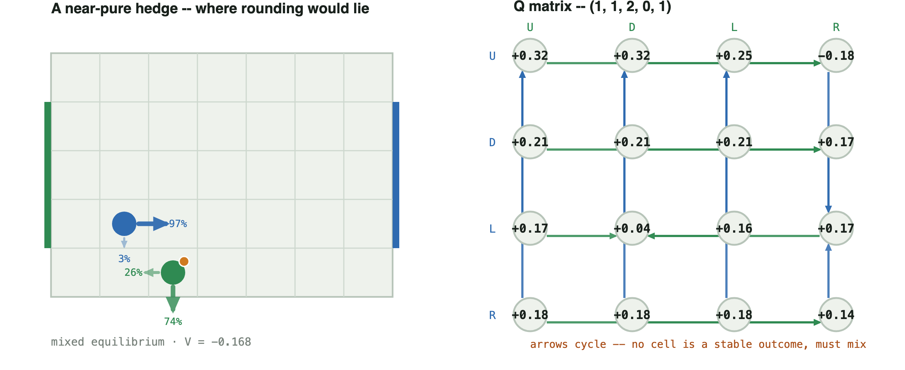
U D L R U 0.317 0.317 0.247 -0.178 D 0.211 0.211 0.211 0.167 L 0.171 0.045 0.157 0.171 R 0.182 0.182 0.182 0.135
Successor states, by joint action — same orientation as the Q matrix above (carrier row, defender column), each cell the resulting (x0, y0, x1, y1, b). Two lines in a cell means the outcome depends on who moves first (each 50%).
| carrier \ defender | U | D | L | R |
|---|---|---|---|---|
| U | (1,2,2,1,1) | (1,0,2,1,1) | (0,1,2,1,1) | 50%: (2,1,2,0,0) 50%: (1,1,2,1,1) |
| D | (1,2,2,0,1) | (1,0,2,0,1) | (0,1,2,0,1) | (2,1,2,0,1) |
| L | (1,2,1,0,1) | 50%: (1,0,2,0,0) 50%: (1,1,1,0,1) | (0,1,1,0,1) | (2,1,1,0,1) |
| R | (1,2,3,0,1) | (1,0,3,0,1) | (0,1,3,0,1) | (2,1,3,0,1) |
The typical mix, mirrored. The board's left-right / role-swap symmetry maps Case 2 exactly onto this state. The values negate to machine precision:
V(case 2) = +0.094235 V(mirror) = -0.094235 sum = -1.39e-17 (zero, to floating-point noise)
Direct evidence for the repetition claim above: this is not a new shape, it is Case 2's identical mix reappearing, exactly mirrored, wherever the same relative configuration recurs.
Type: forced mixed equilibrium — Case 2's exact classification, mirrored.
Support: carrier {U, D} (63.5% / 36.5%) · defender {U, L} (36.5% / 63.5%)
Why indifferent: Carrier E[U]=E[D]=+0.094, above E[R]=+0.091 and E[L]=−0.015. Defender E[U]=E[L]=+0.094, below E[R]=+0.212 and E[D]=+0.332 — Case 2's exact chain, mirrored.
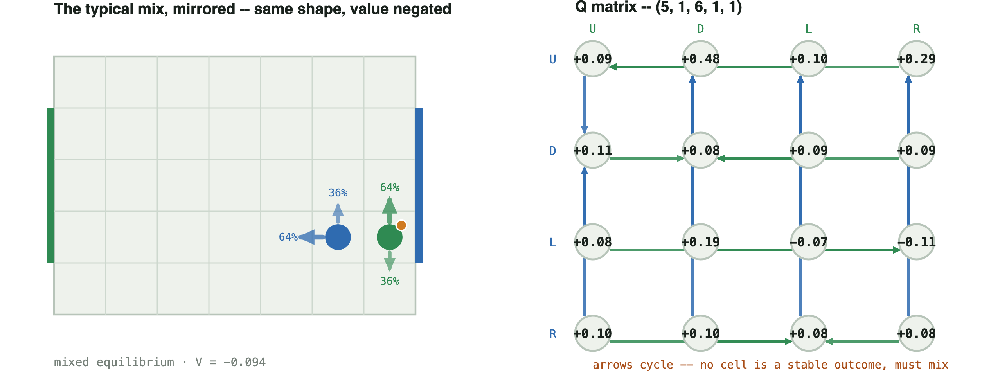
U D L R U 0.086 0.478 0.099 0.286 D 0.109 0.076 0.086 0.085 L 0.082 0.187 -0.071 -0.108 R 0.103 0.103 0.084 0.085
Successor states, by joint action — same orientation as the Q matrix above (carrier row, defender column), each cell the resulting (x0, y0, x1, y1, b). Two lines in a cell means the outcome depends on who moves first (each 50%).
| carrier \ defender | U | D | L | R |
|---|---|---|---|---|
| U | (5,2,6,2,1) | (5,0,6,2,1) | (4,1,6,2,1) | 50%: (5,1,6,2,1) 50%: (6,1,6,2,1) |
| D | (5,2,6,0,1) | (5,0,6,0,1) | (4,1,6,0,1) | 50%: (5,1,6,0,1) 50%: (6,1,6,0,1) |
| L | 50%: (5,2,5,1,1) 50%: (5,2,6,1,0) | 50%: (5,0,5,1,1) 50%: (5,0,6,1,0) | 50%: (4,1,5,1,1) 50%: (4,1,6,1,0) | 50%: (5,1,6,1,0) 50%: (5,1,6,1,1) |
| R | (5,2,6,1,1) | (5,0,6,1,1) | (4,1,6,1,1) | (5,1,6,1,1) |
This project's own tackle rule. Every other case here gets its coin flip from Littman's random move order. This one is solved under the tackle rule (defender commits to a challenge that wins the ball with fixed probability or bounces off) instead — a mechanism with nothing to do with move order at all. It produces the same kind of duel (gap 0.0223): the carrier mixes U 32.1% / D 67.9%, the defender mixes D 60.7% / R 39.3%. Different cause, same structure.
Type: forced mixed equilibrium — same classification as the move-order-driven cases above, under a completely different mechanism.
Support: carrier {U, D} (32.1% / 67.9%) · defender {D, R} (60.7% / 39.3%)
Why indifferent: Carrier E[U]=E[D]=−0.013, above E[R]=−0.031 and E[L]=−0.065. Defender E[D]=E[R]=−0.013, below E[L]=+0.011 and E[U]=+0.045.
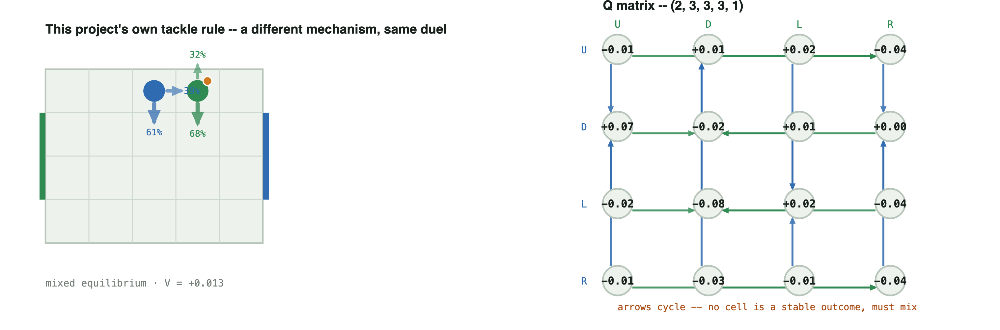
U D L R U -0.012 0.005 0.016 -0.042 D 0.072 -0.022 0.009 0.000 L -0.019 -0.080 0.019 -0.042 R -0.007 -0.026 -0.006 -0.039
Successor states, by joint action — same orientation as the Q matrix above (carrier row, defender column), each cell the resulting (x0, y0, x1, y1, b). Two lines in a cell means the outcome depends on who moves first (each 50%).
| carrier \ defender | U | D | L | R |
|---|---|---|---|---|
| U | (2,3,3,3,1) | (2,2,3,3,1) | (1,3,3,3,1) | 50%: (3,3,4,3,0) 50%: (2,3,3,3,1) |
| D | (2,3,3,2,1) | (2,2,3,2,1) | (1,3,3,2,1) | 50%: (3,3,4,3,0) 50%: (2,3,3,2,1) |
| L | (2,3,3,3,0) | (2,2,2,3,1) | (1,3,2,3,1) | 50%: (3,3,4,3,0) 50%: (2,3,3,3,1) |
| R | (2,3,4,3,1) | (2,2,4,3,1) | (1,3,4,3,1) | 50%: (3,3,4,3,0) 50%: (2,3,4,3,1) |
The asymmetric mix — the sharpest LP-degeneracy example. Support (2, 1) — gap 0.0095. The odd one out: the carrier's equilibrium still mixes two actions (U 2.6% / D 97.4%), but the defender's equilibrium is a single fixed move (R, 100%). Every other case on this page is a symmetric duel — both players genuinely guessing. Here only one side is.
Type: pure-tied / fractional LP output (defender) — the defender's official policy is printed pure R (100%), but D ties it exactly: the choice of R over D is exactly as arbitrary as a printed fractional split. The sharpest example on this page that a fractional LP output is not automatically a strategically required mixed strategy.
Support: carrier {U, D} (2.6% / 97.4%) · defender {R} (100%)
Why indifferent: Carrier E[U]=E[D]=+0.095, above E[L]=+0.093 and E[R]=−0.072 (worked out fully below). The defender's official policy is pure R (100%), but E[R]=+0.095 and E[D]=+0.095 tie too: the defender's own choice of R over D is exactly as arbitrary as the carrier's U/D split, it just isn't printed as a percentage because the solver put all the weight on one side.
U D L R U 0.085 0.478 0.291 0.095 D 0.478 0.085 0.291 0.095 L 0.093 0.093 0.086 0.093 R 0.082 0.082 -0.122 -0.072
Successor states, by joint action — same orientation as the Q matrix above (carrier row, defender column), each cell the resulting (x0, y0, x1, y1, b). Two lines in a cell means the outcome depends on who moves first (each 50%).
| carrier \ defender | U | D | L | R |
|---|---|---|---|---|
| U | (0,3,1,3,0) | (0,3,1,1,0) | 50%: (0,3,0,2,0) 50%: (0,3,1,2,0) | (0,3,2,2,0) |
| D | (0,1,1,3,0) | (0,1,1,1,0) | 50%: (0,1,0,2,0) 50%: (0,1,1,2,0) | (0,1,2,2,0) |
| L | (0,2,1,3,0) | (0,2,1,1,0) | (0,2,1,2,0) | (0,2,2,2,0) |
| R | 50%: (0,2,1,3,1) 50%: (1,2,1,3,0) | 50%: (0,2,1,1,1) 50%: (1,2,1,1,0) | 50%: (0,2,1,2,0) 50%: (0,2,1,2,1) | 50%: (0,2,2,2,1) 50%: (1,2,2,2,0) |
Why the carrier still needs two actions against a defender who never varies: against the defender's pure R, column R reads U 0.095, D 0.095, L 0.093, R -0.072 — U and D are exactly tied, both strictly better than L or R. Nothing in the payoffs favours one over the other, so any split of U/D is an equally valid best reply; the solver's LP reports one particular split (2.6% / 97.4%), not a probability forced by the game the way Case 3's 7.7% / 92.3% is. This is the sharpest example on this page of a general fact worth stating plainly: a fractional LP output is not automatically a strategically required mixed strategy. A tie between two rows can look identical, in the printed policy, to a genuine forced mix, but it is a different phenomenon — no best-reply cycle is involved, and either pure U or pure D alone would also be a valid equilibrium reply to the defender's fixed R.
The three-lane mix. Support (3, 2) — gap 0.0699, the deepest gap of any state on this page (fifteen times deeper than the shallowest hedge in Case 6). This is the fourth and last canonical support shape: the carrier genuinely needs three live actions, while the defender only ever needs two. Combined with Case 9, this settles a structural question the certificates make checkable rather than assumed: the defender never needs strictly more actions than the carrier, across all 94 no-pure-saddle states on the canonical board.
Type: degenerate equilibrium face (defender) — D ties the reported {L, R} split exactly (see “why indifferent”), so the defender is really indifferent among three actions even though the LP only split weight over two. The carrier's own split is a genuine forced mix.
Support: carrier {U, D, L} (16.9% / 66% / 17.1%) · defender {L, R} (77.9% / 22.1%)
Why indifferent: Carrier E[U]=E[D]=E[L]=+0.282, above E[R]=+0.217 — a genuine three-way tie. The defender's official support is {L, R} at +0.282, below E[U]=+0.322 — but E[D]=+0.282 too: the defender is really indifferent among D, L, and R, even though the LP only split weight over two of them.
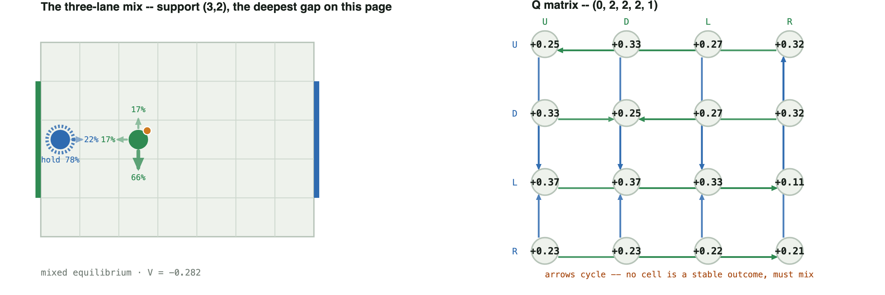
U D L R U 0.247 0.330 0.272 0.317 D 0.330 0.247 0.272 0.317 L 0.366 0.366 0.330 0.110 R 0.228 0.228 0.220 0.205
Successor states, by joint action — same orientation as the Q matrix above (carrier row, defender column), each cell the resulting (x0, y0, x1, y1, b). Two lines in a cell means the outcome depends on who moves first (each 50%).
| carrier \ defender | U | D | L | R |
|---|---|---|---|---|
| U | (0,3,2,3,1) | (0,1,2,3,1) | (0,2,2,3,1) | (1,2,2,3,1) |
| D | (0,3,2,1,1) | (0,1,2,1,1) | (0,2,2,1,1) | (1,2,2,1,1) |
| L | (0,3,1,2,1) | (0,1,1,2,1) | (0,2,1,2,1) | 50%: (1,2,2,2,0) 50%: (0,2,1,2,1) |
| R | (0,3,3,2,1) | (0,1,3,2,1) | (0,2,3,2,1) | (1,2,3,2,1) |
Mixing forced by reward alone, not transition. An advanced case, illustrating a fundamentally different mechanism from the four above. Every case so far gets its coin flip from a stochastic transition — the random move order. This one has no transition stochasticity at all: the mix comes entirely from scoring="territory", a dense per-step reward for the ball in the opponent's final third, layered on top of the ordinary win/loss score. Gap 0.0653 — close to a fair coin (entropy 0.996 bits), forced purely by coupling the reward to both players' actions. Mixing does not require stochastic transitions; it can come from the payoff structure alone.
Type: forced mixed equilibrium — reward-coupling forces a genuine indifference on both sides, the same as a transition-coupled matching-pennies core.
Support: carrier {D, R} (53.8% / 46.2%) · defender {U, L} (95.1% / 4.9%)
Why indifferent: Carrier E[D]=E[R]=+0.129, above E[U]=+0.119 and E[L]=+0.090. Defender E[U]=E[L]=+0.129, below E[D]=+0.455 and E[R]=+0.473.
U D L R U 0.116 0.105 0.170 0.136 D 0.094 0.415 0.815 0.450 L 0.094 0.105 0.000 0.105 R 0.170 0.500 -0.671 0.500
Successor states, by joint action — same orientation as the Q matrix above (carrier row, defender column), each cell the resulting (x0, y0, x1, y1, b). Two lines in a cell means the outcome depends on who moves first (each 50%).
| carrier \ defender | U | D | L | R |
|---|---|---|---|---|
| U | (4,4,5,4,0) | (4,4,5,3,0) | (4,4,5,4,1) | (4,4,6,4,0) |
| D | (4,3,5,4,0) | (4,3,5,3,0) | (4,3,4,4,0) | (4,3,6,4,0) |
| L | (3,4,5,4,0) | (3,4,5,3,0) | (3,4,4,4,0) | (3,4,6,4,0) |
| R | (4,4,5,4,1) | (5,4,5,3,0) | (5,4,4,4,1) | (5,4,6,4,0) |
Movement slip on a single-cell goal. The sharpest possible contrast with Case 1. A single-cell goal under deterministic move order is pure across every configuration tested in this project — that is the whole goal-width result; a board-size-free proof remains open. Add slip=0.15 (each player independently takes a uniform-random move instead of its chosen one, 15% of the time, regardless of position) to that exact board, and 52 mixed states appear where there were 0. Gap 0.0172 — a genuine, certified mix, not noise. The goal-width switch is a property of Littman's move-order coin specifically; a coin that lands on every square regardless of the goal forces mixing everywhere, independent of goal width.
Type: forced mixed equilibrium — movement noise produces the same genuine indifference as the move-order coin, on a board shape that is otherwise always pure.
Support: carrier {D, L} (80.2% / 19.8%) · defender {U, L} (3.9% / 96.1%)
Why indifferent: Carrier E[D]=E[L]=+0.053, above E[R]=+0.016 and E[U]=−0.010. Defender E[U]=E[L]=+0.053, below E[D]=+0.072 and E[R]=+0.450.
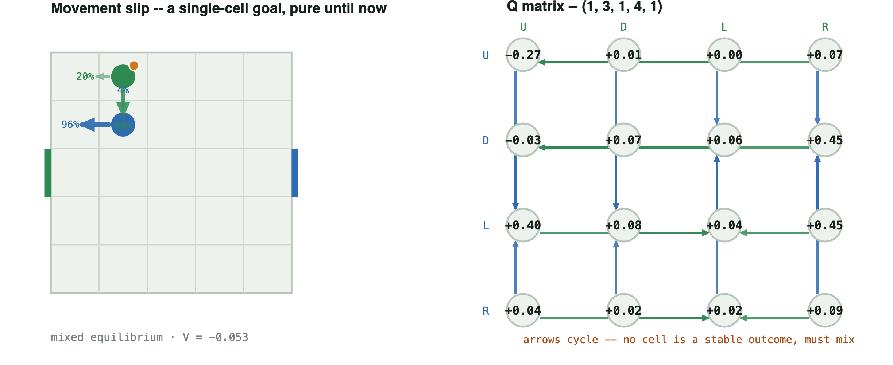
U D L R U -0.273 0.006 0.001 0.069 D -0.031 0.069 0.057 0.450 L 0.396 0.083 0.039 0.450 R 0.039 0.020 0.015 0.092
Successor states, by joint action — same orientation as the Q matrix above (carrier row, defender column), each cell the resulting (x0, y0, x1, y1, b). Two lines in a cell means the outcome depends on who moves first (each 50%).
Shown: the intended successor before movement slip is applied (slip=0 isolates it, for readability). The actual game has slip=0.15; running python scripts/positions.py on this state prints the full noisy distribution — up to 16 outcomes per cell, each intended move landing on its target around 79% of the time and spreading over nearby cells the rest. See docs/generalize.md.
| carrier \ defender | U | D | L | R |
|---|---|---|---|---|
| U | (1,3,1,4,0) | (1,2,1,4,1) | (0,3,1,4,1) | (2,3,1,4,1) |
| D | (1,4,1,3,0) | (1,2,1,3,1) | (0,3,1,3,1) | (2,3,1,3,1) |
| L | (1,4,0,4,1) | (1,2,0,4,1) | (0,3,0,4,1) | (2,3,0,4,1) |
| R | (1,4,2,4,1) | (1,2,2,4,1) | (0,3,2,4,1) | (2,3,2,4,1) |
A mixed equilibrium is exactly the strategy pair where every action in a player's support earns the same expected payoff against the opponent's own mix — that equality is what "indifferent" means in Case 3, and it is also why the best-response graph cycles with no resting point: if one action in the support paid strictly more, that player would raise its weight on it, which is precisely the condition an equilibrium rules out. A best-reply cycle and mutual indifference are the same fact seen from two sides, not two different explanations. Case 9 shows the boundary of that story: indifference alone (a tie against a fixed opponent) can produce the same symptom — a fractional policy — without a cycle anywhere in the matrix.